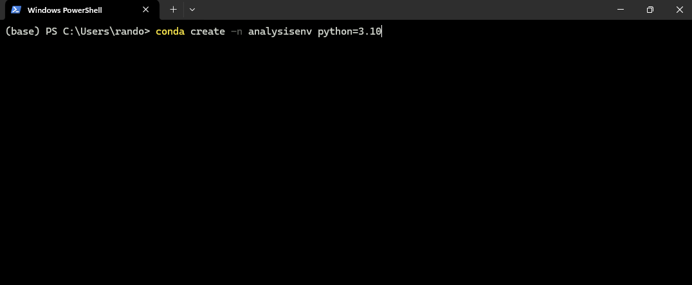
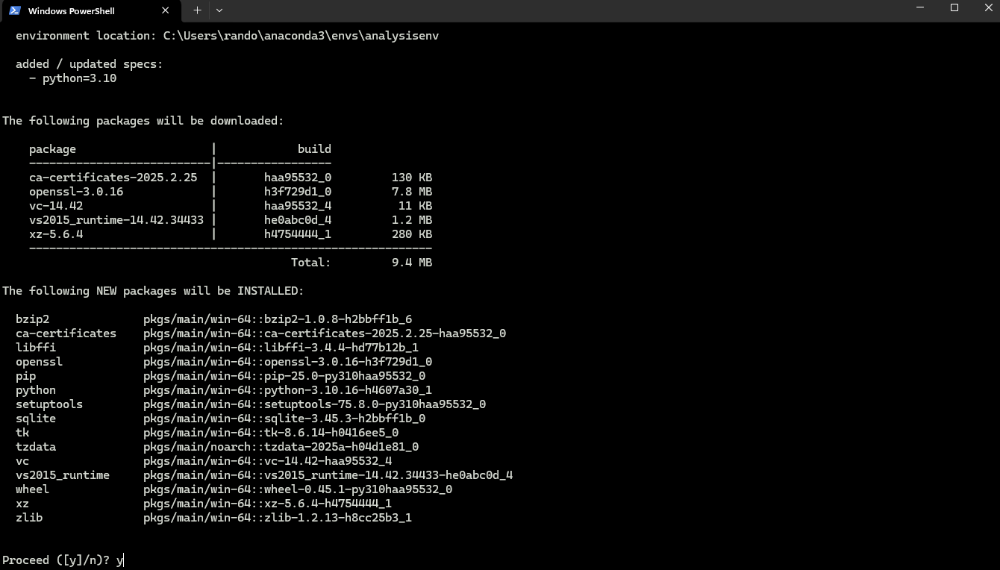
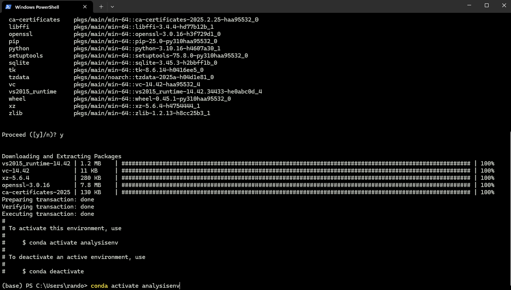
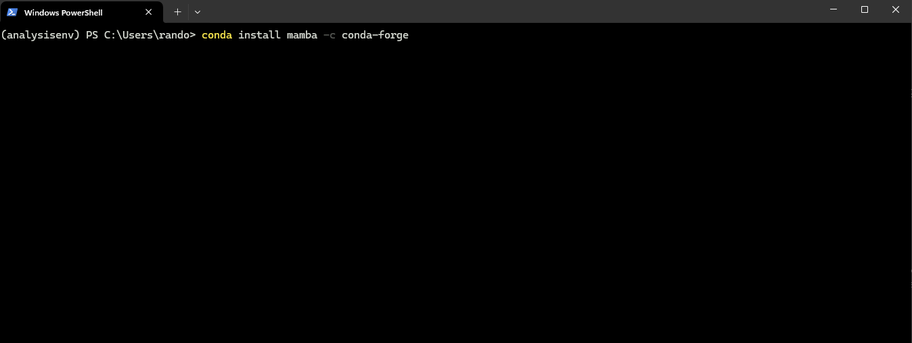
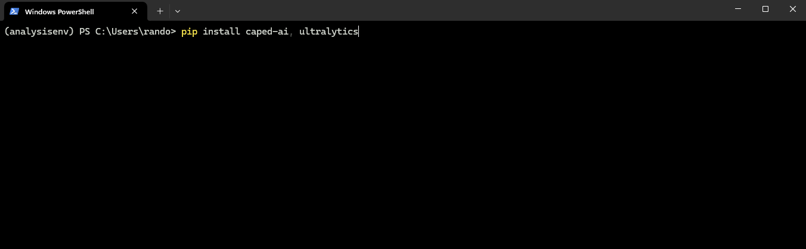
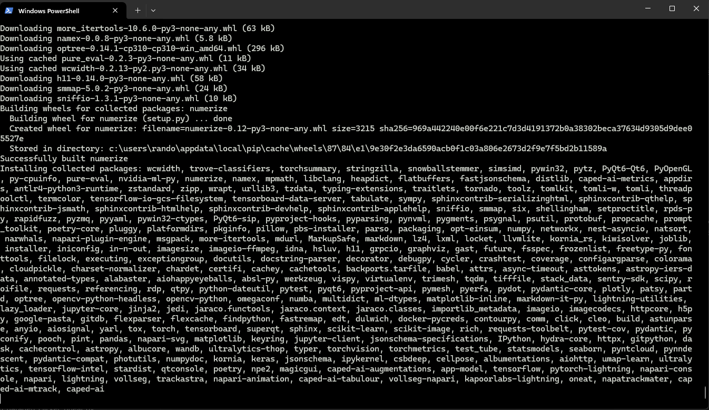
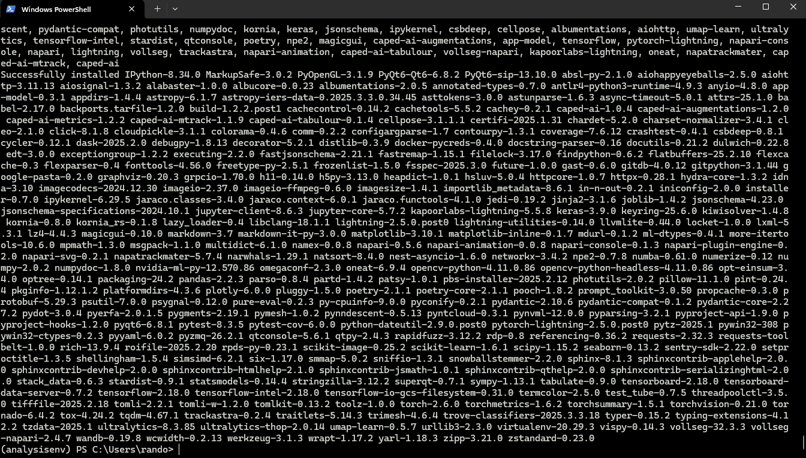
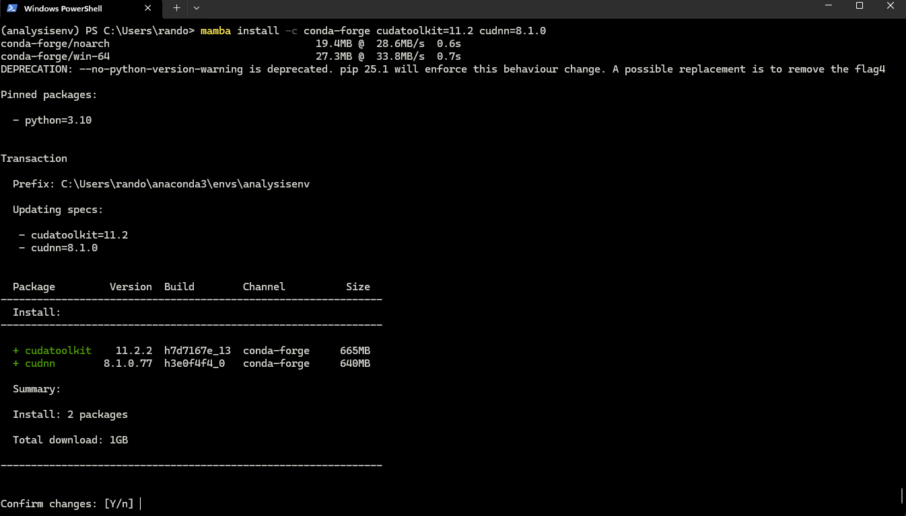
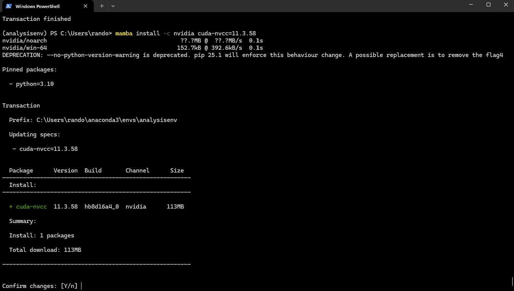
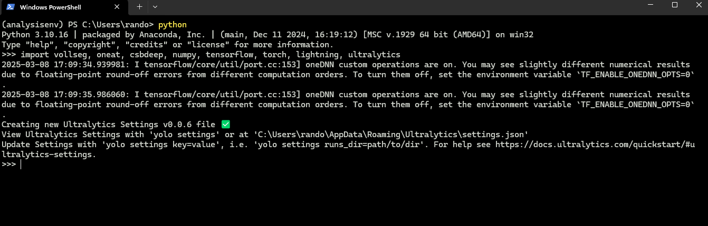

🐍 Creating a Virtual Environment#
Download the Anaconda package for your OS. The instructions below are tailored for Windows users but can also be applied on Mac or Linux. Once Anaconda is installed, open an Anaconda Prompt or a Windows PowerShell. If the installation was system-wide, you should see (base) before your command prompt.
To create a new conda environment (skip this step if you already have one for this project):
conda create -n analysisenv python=3.10

After pressing Enter, you should see output similar to:

Activate your new environment:
conda activate analysisenv

🛠️ Installing Mamba#
Mamba is a fast package manager that helps resolve dependencies efficiently. Install it into your environment:
conda install mamba -c conda-forge

📦 Installing Main Packages#
Install the core packages required for analysis:
pip install caped-ai ultralytics

Wait for the installation to complete:
 
🚀 Installing CUDA Toolkit#
Even if your HPC has system-wide CUDA, it’s recommended to include it in your environment:
mamba install -c conda-forge cudatoolkit=11.2 cudnn=8.1.0

Then install the NVIDIA compiler:
mamba install -c nvidia cuda-nvcc=11.3.58

🔒 Locking TensorFlow & NumPy Versions#
To ensure compatibility with our models (trained on TensorFlow 2.x):
python3 -m pip install tensorflow-gpu==2.10.*
pip uninstall numpy
pip install numpy==1.26.4
✅ Successful Installation#
Verify everything by entering a Python REPL:
python
Then run:
import vollseg, oneat, csbdeep, numpy, tensorflow, torch, lightning, ultralytics
You should see no errors, similar to:

Exit the shell:
quit()
Congratulations! Your environment is now ready to run all our scripts, notebooks, and Napari plugins. “””